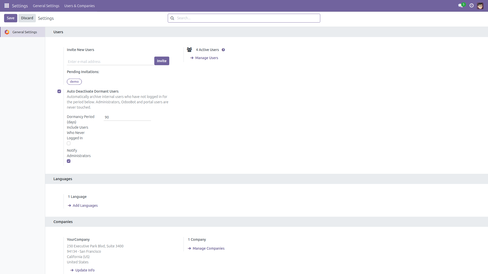
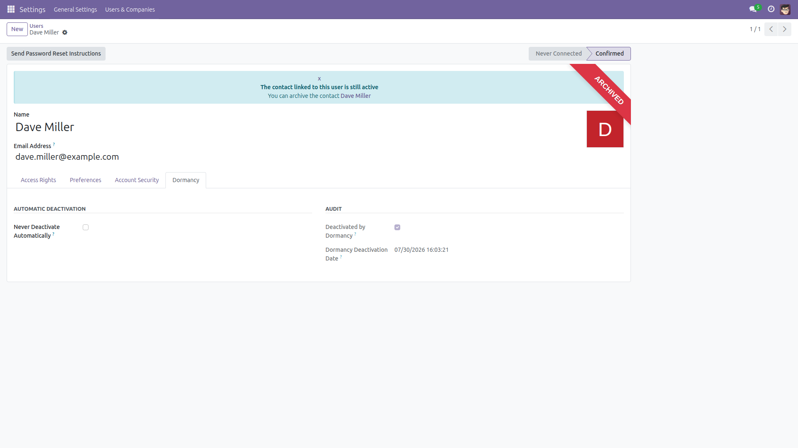
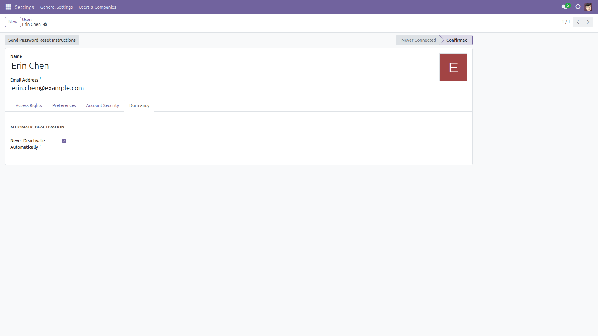
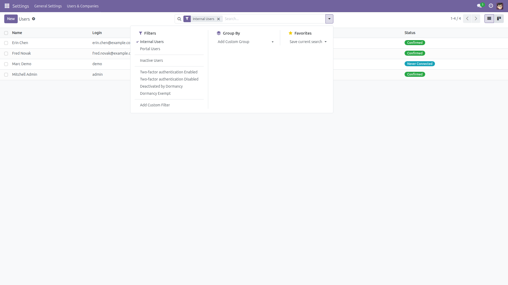

Auto Deactivate Dormant Users
Free seats. Pass audits. Automatically.
Archives internal users who have not logged in for a configurable number of days.
Companies on per-user plans stop paying for seats nobody uses, and security teams get
the dormant-account control that ISO 27001 / SOC 2 audits ask for — without a
single line of custom code. Free and open source (LGPL-3), identical behavior
on Odoo 14.0 through 19.0.
- Safe by default — disabled until you switch it on; administrators, OdooBot and portal users are never touched.
- Per-user exemptions — mark any account "Never Deactivate Automatically".
- Full audit trail — archived accounts carry a "Deactivated by Dormancy" flag and timestamp; re-activating clears them.
- Admin notifications — an email summary every time accounts are archived.
Screenshots

Settings → General Settings → Users: switch the feature on, set the dormancy period and options. Nothing runs until you enable it.

A dormant account archived by the daily job — the Dormancy tab shows the audit flag and the exact date it happened.

Any user can be excluded: tick "Never Deactivate Automatically" on their Dormancy tab.

Ready-made filters on Settings → Users: "Deactivated by Dormancy" and "Dormancy Exempt".
Installation
- Open Apps, remove the default "Apps" filter if needed, and search for Auto Deactivate Dormant Users.
- Click Install. Only standard Odoo modules (
base_setup, mail) are required.
Configuration
- Go to Settings → General Settings and scroll to the Users section and find Auto Deactivate Dormant Users.
- Enable Auto Deactivate Dormant Users — the module does nothing until you do.
- Set the Dormancy Period in days (default 90, enforced minimum 7).
- Optionally enable Include Users Who Never Logged In (counted from their creation date) and Notify Administrators.
- Click Save.
Usage
- A daily scheduled action (Users: deactivate dormant accounts) archives internal users whose latest login is older than the dormancy period.
- To exempt someone, open their user form → Dormancy tab → tick Never Deactivate Automatically.
- To review what was archived, open Settings → Users, include archived records, and use the Deactivated by Dormancy filter.
- Re-activating an archived user clears the dormancy flags — the account starts a fresh dormancy period.
Version notes
Behavior is identical on every supported series (14.0 – 19.0). Only internal view markup differs per version.
License: LGPL-3 · Source on GitHub · Issues and contributions welcome.